Out of the 1280 respondents, there were 49.77% of caregivers reporting using out-of-home childcare before COVID-19.
## # A tibble: 1 x 2
## n Percent
## <int> <dbl>
## 1 1280 49.8Before COVID-19, there were 54.72% of Black caregivers, 49.73% of White caregivers, and 47.70% of Latinx caregivers reporting using out-of-home childcare. The differences across racial/ethnic groups were not statistically significant.
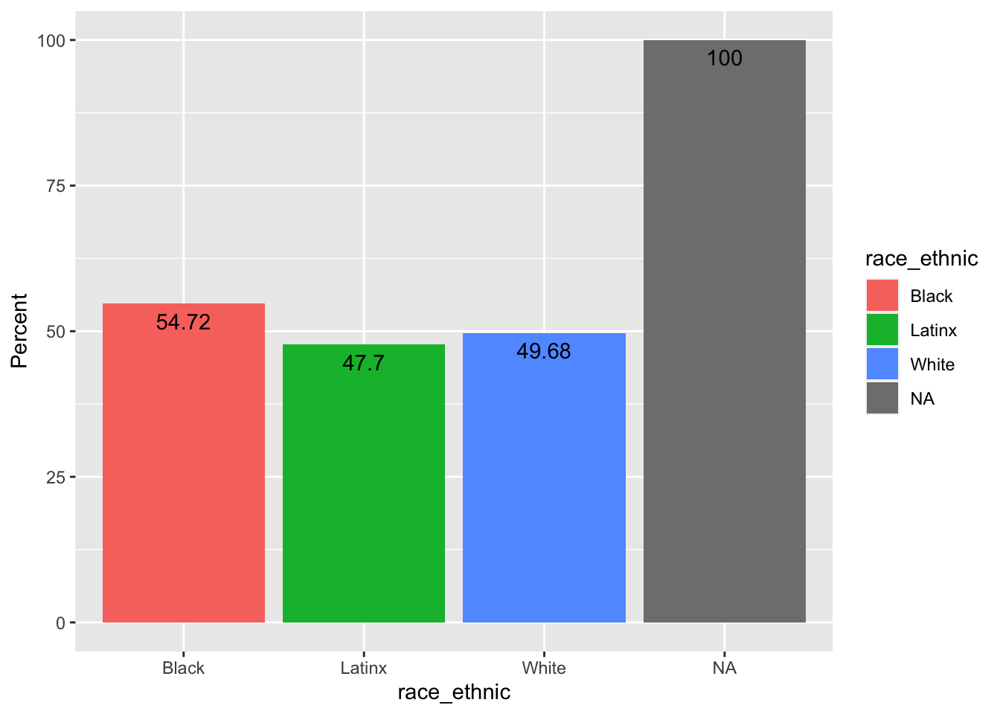
## Number of cases in table: 1279
## Number of factors: 2
## Test for independence of all factors:
## Chisq = 1.4499, df = 2, p-value = 0.4843Before COVID-19, both low-income and high-income families reported similar percentage of using out-of-home childcare.
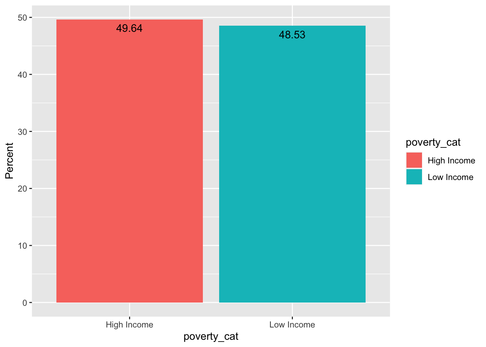
## Number of cases in table: 207
## Number of factors: 2
## Test for independence of all factors:
## Chisq = 0.022544, df = 1, p-value = 0.8806Before COVID-19, single parents reported slightly more usage of out-of-home childcare. However, the differences were not statistically significant.
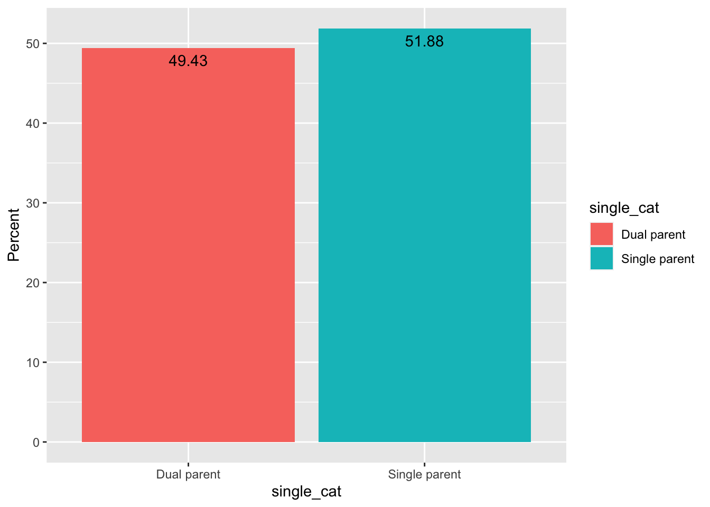
## Number of cases in table: 1278
## Number of factors: 2
## Test for independence of all factors:
## Chisq = 0.2855, df = 1, p-value = 0.5931Before COVID-19, parents of children with disability reported less usage of out-of-home childcare. However, the differences were not statistically significant.
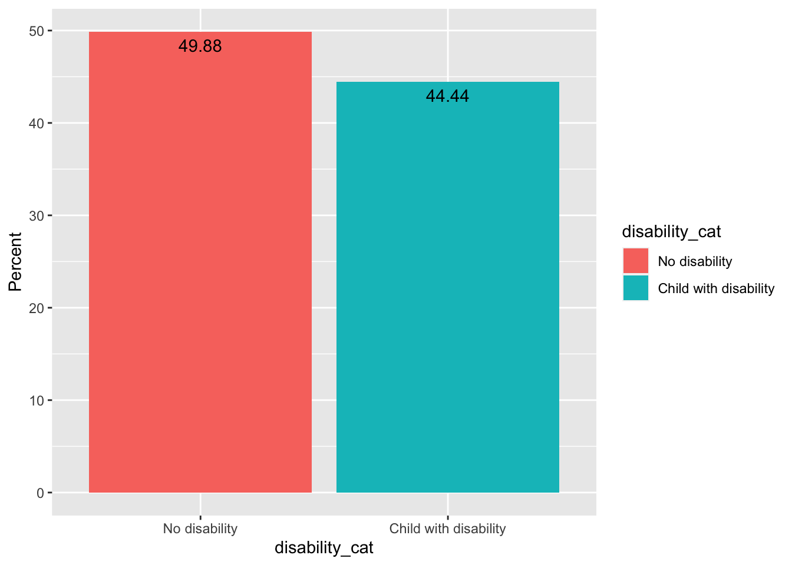
## Number of cases in table: 1280
## Number of factors: 2
## Test for independence of all factors:
## Chisq = 0.3124, df = 1, p-value = 0.5762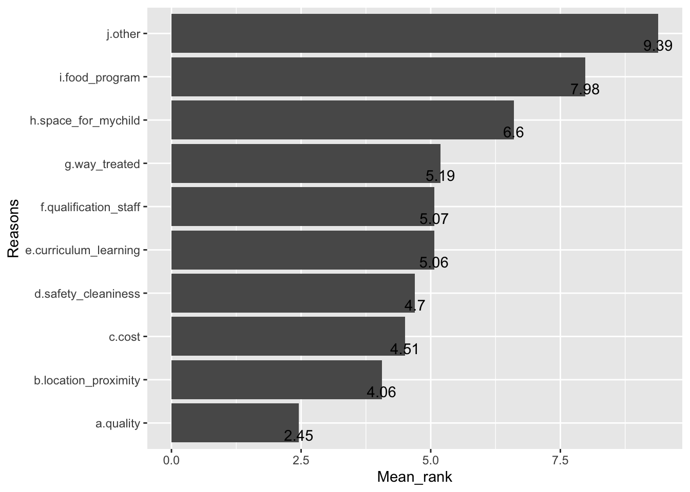
*Note. Lower mean rank scores indicates more important reasons for selecting childcare arrangements.
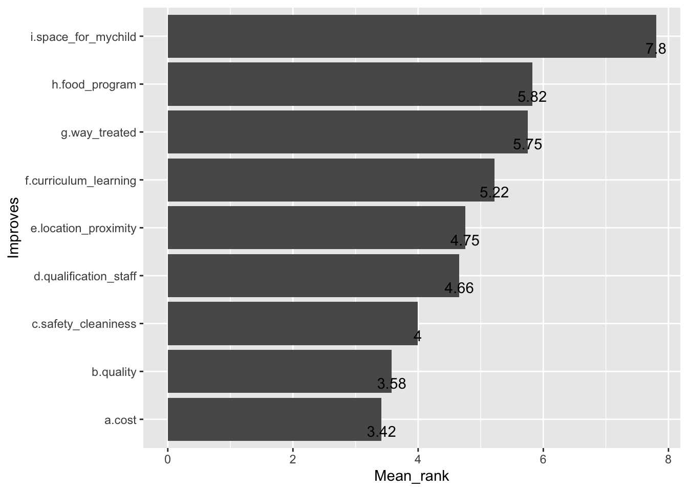
*Note. Lower mean rank scores indicates items that caregivers want to improve the most.
Out of the 1280 respondents, there were 14.61% of caregivers looking for childcare currently.
## # A tibble: 1 x 2
## n Percent
## <int> <dbl>
## 1 1280 14.6There were 25.47% of Black caregivers, 13.58% of White caregivers, and 13.81% of Latinx caregivers reporting currently looking for childcare. The differences across racial/ethnic groups were statistically significant.
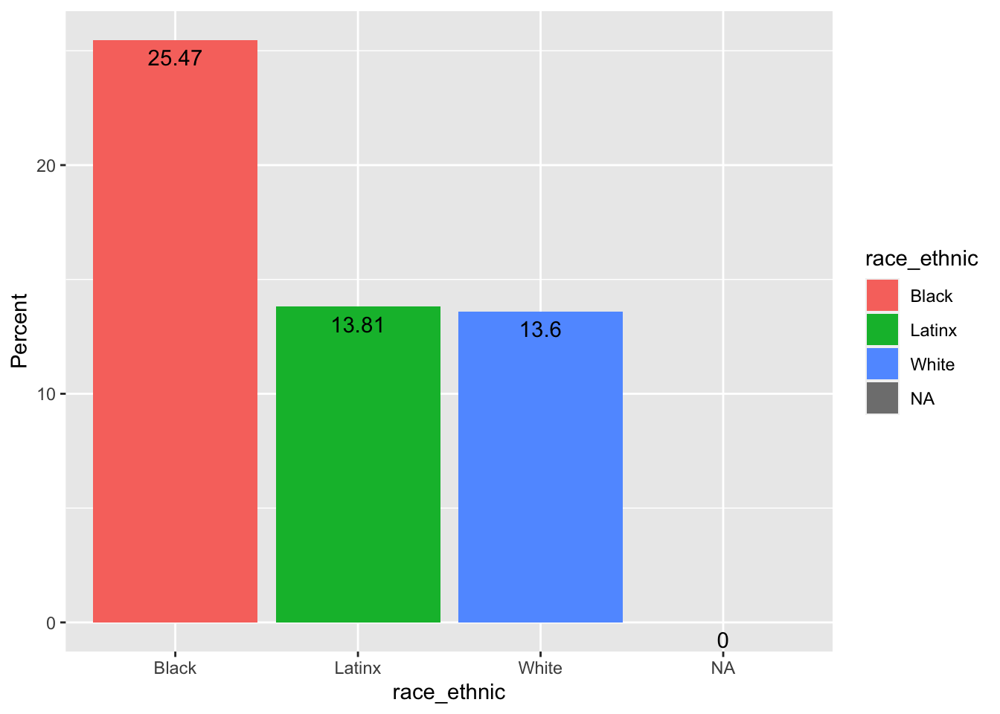
## Number of cases in table: 1278
## Number of factors: 2
## Test for independence of all factors:
## Chisq = 10.883, df = 2, p-value = 0.004333There were 20.59% of low-income caregivers and 15.83% of high-income caregivers reporting currently looking for childcare. However, the differences across the two income groups were not statistically significant.
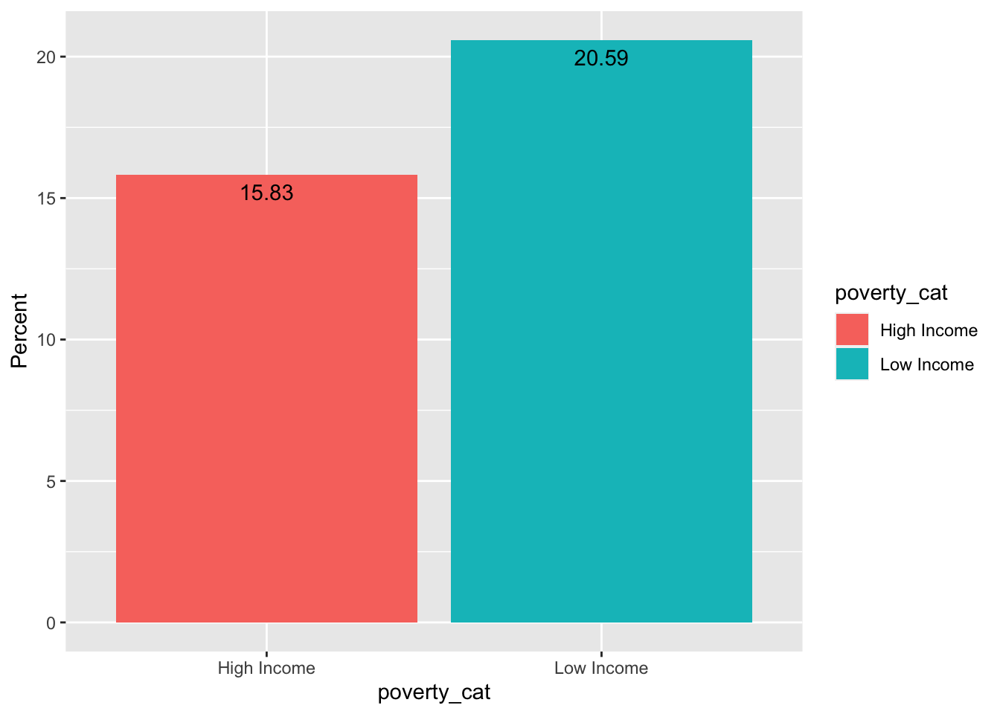
## Number of cases in table: 207
## Number of factors: 2
## Test for independence of all factors:
## Chisq = 0.7204, df = 1, p-value = 0.396There were 20.30% of single-parent caregivers and 13.97% of non-single-parent caregivers reporting currently looking for childcare. The differences across the two groups was marginally statistically significant.
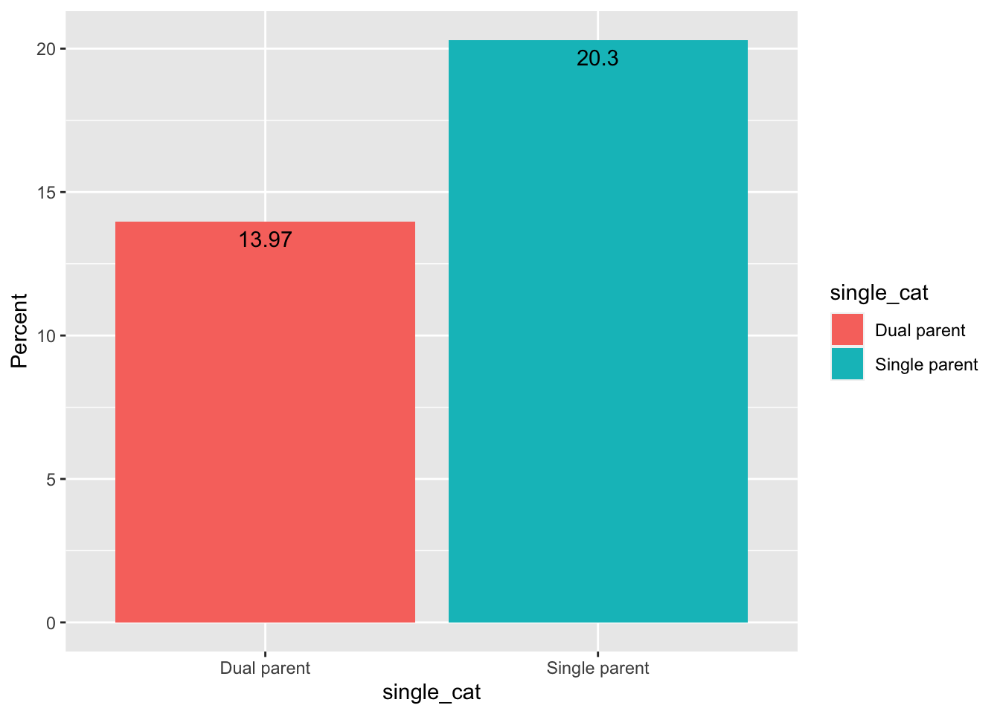
## Number of cases in table: 1277
## Number of factors: 2
## Test for independence of all factors:
## Chisq = 3.801, df = 1, p-value = 0.05122There were 22.2% of caregivers of children with disability and 14.45% of caregivers of children without disability reporting currently looking for childcare. However, The differences across the two groups not statistically significant.
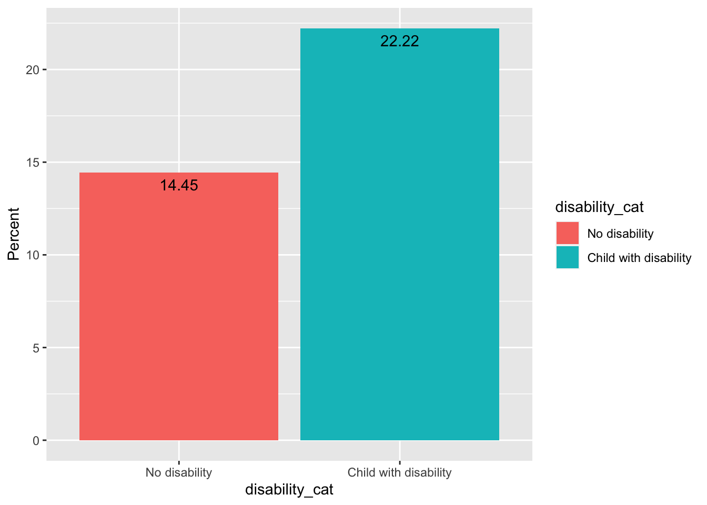
##
## Fisher's Exact Test for Count Data
##
## data: table(ccare$post_lfcc, ccare$disability_cat)
## p-value = 0.2677
## alternative hypothesis: true odds ratio is not equal to 1
## 95 percent confidence interval:
## 0.5503895 4.4049228
## sample estimates:
## odds ratio
## 1.68978*Note. Small sample of children with disability (n = 27)
*Note.
1) This section only included respondents who reported currently looking for childcare (n = 187)
2) With relatively small sample size, results need to be interpreted cautiously
Out of the 187 respondents, there were 88.24% of caregivers reporting experiencing challenges finding childcare.
## # A tibble: 1 x 2
## n Percent
## <int> <dbl>
## 1 187 88.2There were 81.84% of Black caregivers, 87.40% of White caregivers, and 96.97% of Latinx caregivers reporting currently experiencing challenges finding childcare. The differences across racial/ethnic groups were not statistically significant. 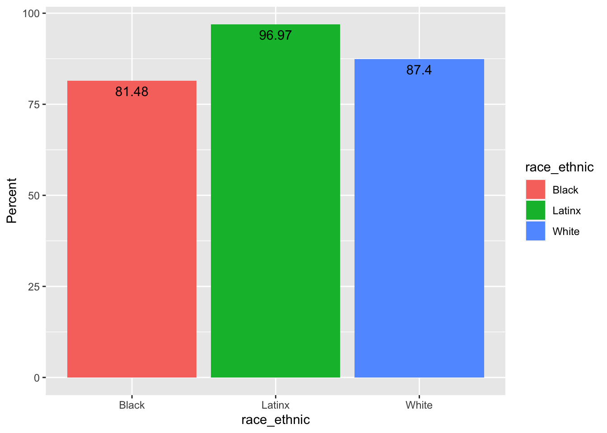
##
## Fisher's Exact Test for Count Data
##
## data: table(ccare_cg$post_cg_fd, ccare_cg$race_ethnic)
## p-value = 0.1412
## alternative hypothesis: two.sidedThere were 92.86% of low-income caregivers and 81.82% of high-income caregivers currently experiencing challenges finding childcare. The differences across the two groups were not statistically significant.
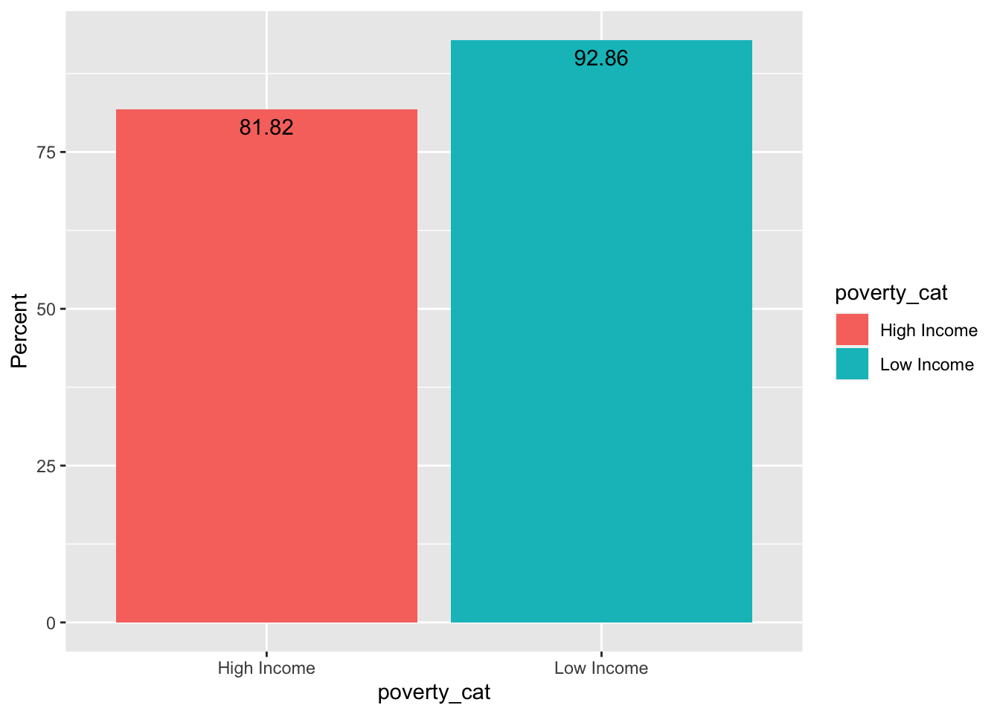
##
## Fisher's Exact Test for Count Data
##
## data: table(ccare_cg$post_cg_fd, ccare_cg$poverty_cat)
## p-value = 0.6283
## alternative hypothesis: true odds ratio is not equal to 1
## 95 percent confidence interval:
## 0.2399918 152.9008536
## sample estimates:
## odds ratio
## 2.814317*Note. Very small sample size.
There were 85.19% of single-parent caregivers and 88.75% of non-single-parent caregivers currently experiencing challenges finding childcare. The differences across the two groups were not statistically significant.
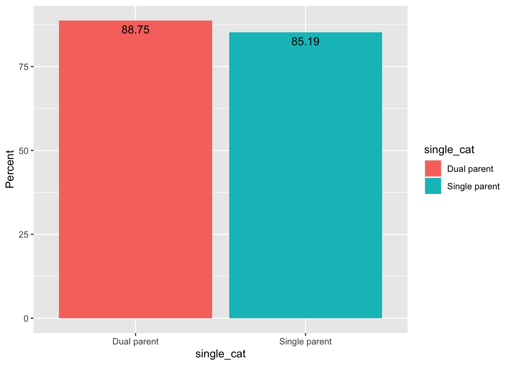
##
## Fisher's Exact Test for Count Data
##
## data: table(ccare_cg$post_cg_fd, ccare_cg$single_cat)
## p-value = 0.5312
## alternative hypothesis: true odds ratio is not equal to 1
## 95 percent confidence interval:
## 0.2129193 3.2306045
## sample estimates:
## odds ratio
## 0.7302162There were 83.33% of caregivers of children with disability and 88.4% of caregivers of children without disability currently experiencing challenges finding childcare. The differences across the two groups were not statistically significant.
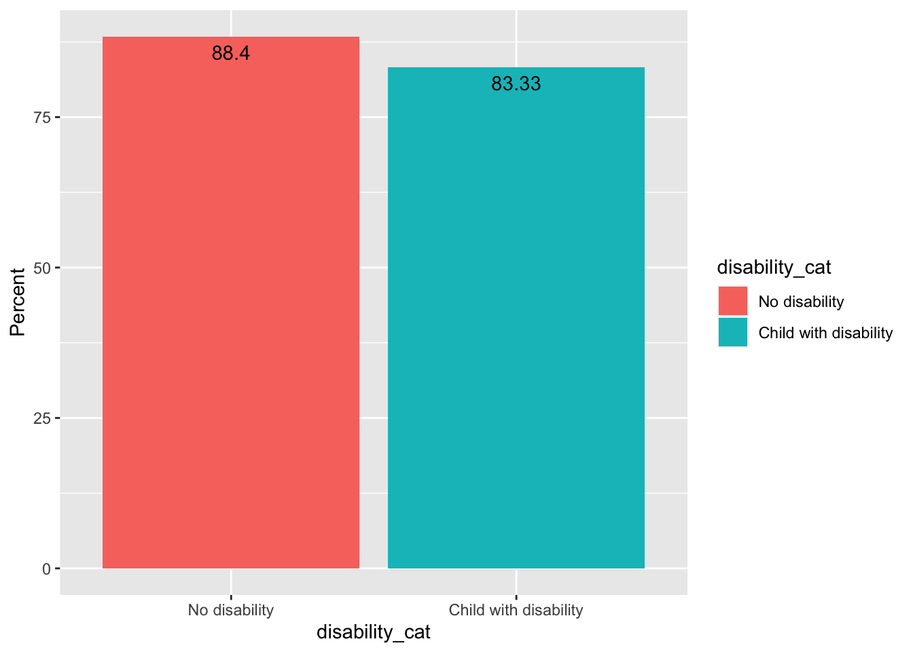
##
## Fisher's Exact Test for Count Data
##
## data: table(ccare_cg$post_cg_fd, ccare_cg$disability_cat)
## p-value = 0.5332
## alternative hypothesis: true odds ratio is not equal to 1
## 95 percent confidence interval:
## 0.06863057 32.49950916
## sample estimates:
## odds ratio
## 0.6579698*Note. Small sample size of children with disability (n = 27).
*Note. This section has small numbers of respondents (n = 187). Interpret results with causion
Out of the 187 respondents who are currently looking for childcare, there were 68.45% of caregivers reporting experiencing challenges affording childcare.
## # A tibble: 1 x 2
## n Percent
## <int> <dbl>
## 1 187 68.4There were 81.48% of Black caregivers, 62.99% of White caregivers, and 78.79% of Latinx caregivers reporting currently experiencing challenges affording childcare. The differences across racial/ethnic groups were marginally statistically significant.
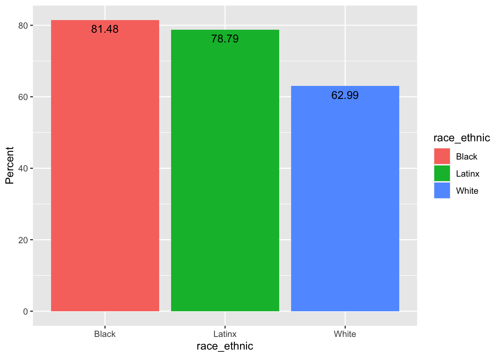
## Number of cases in table: 187
## Number of factors: 2
## Test for independence of all factors:
## Chisq = 5.508, df = 2, p-value = 0.06368There were 85.71% of low-income caregivers and 68.18% of high-income caregivers currently experiencing challenges affording childcare. The differences across the two groups were not statistically significant (becuase of the small sample size).
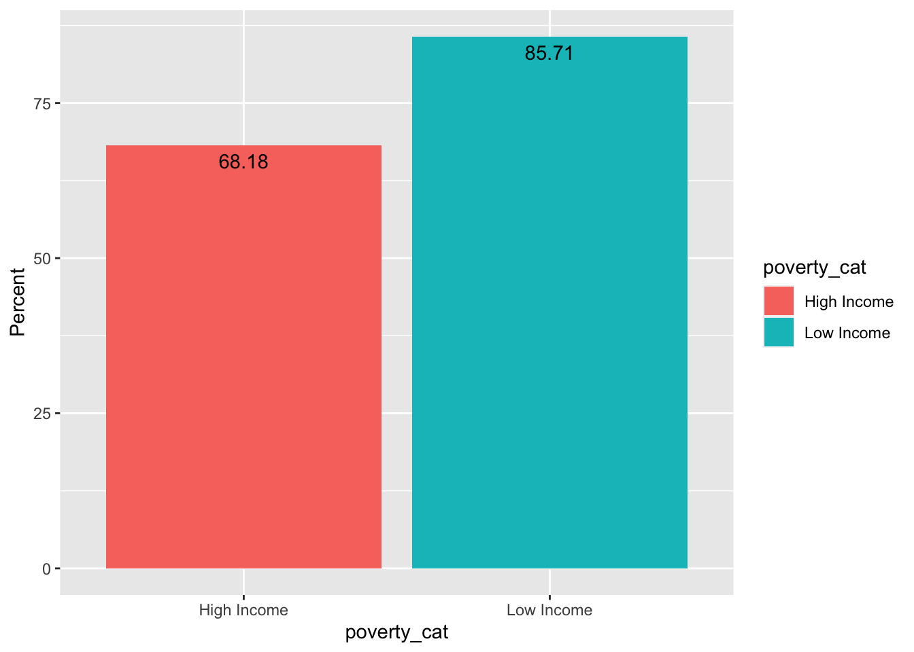
##
## Fisher's Exact Test for Count Data
##
## data: table(ccare_cg$post_cg_af, ccare_cg$poverty_cat)
## p-value = 0.4315
## alternative hypothesis: true odds ratio is not equal to 1
## 95 percent confidence interval:
## 0.410463 31.642472
## sample estimates:
## odds ratio
## 2.725649*Note: Very small sample size.
There were 74.07% of single-parent caregivers and 67.50% of non-single-parent caregivers currently experiencing challenges affording childcare. The differences across the two groups were not statistically significant.
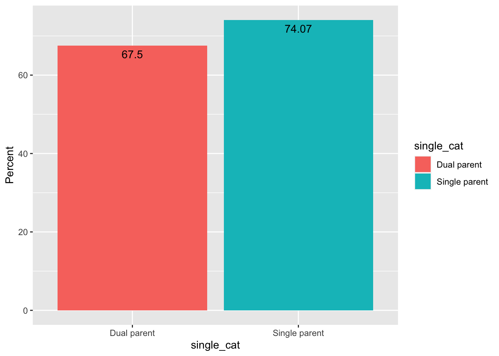
## Number of cases in table: 187
## Number of factors: 2
## Test for independence of all factors:
## Chisq = 0.4623, df = 1, p-value = 0.4965There were 66.67% of caregivers of children with disability and 68.51% of caregivers of children without disability currently experiencing challenges affording childcare. The differences across the two groups were not statistically significant.
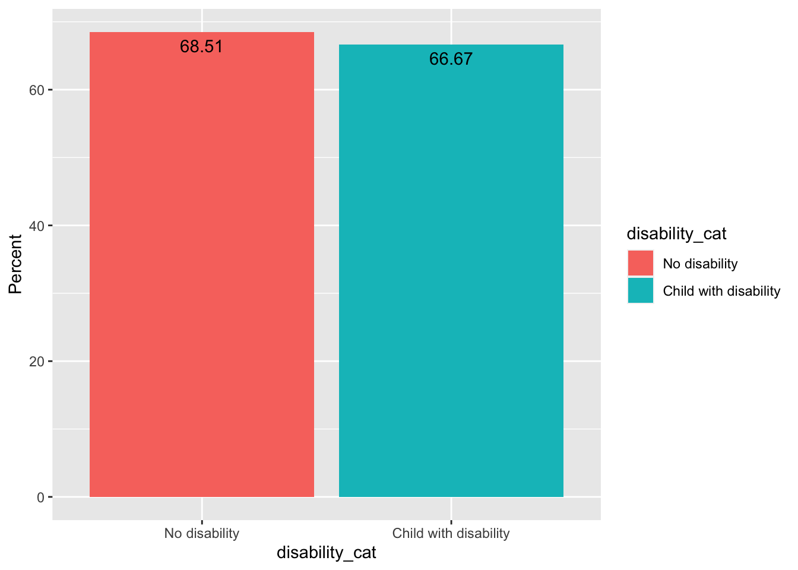
## Number of cases in table: 187
## Number of factors: 2
## Test for independence of all factors:
## Chisq = 0.00912, df = 1, p-value = 0.9239
## Chi-squared approximation may be incorrectAmong all the caregivers currently looking for childcare, the main challenges they face include:
1) can’t find a child care arrangement where they can be confident their child will not be exposed to COVID-19 (51.87%)
2) regular childcare program was closed (35.29%)
3) no longer be able to afford childcare (24.60%)
4) regular childcare program was open but no longer meet needs (11.23%)
5) other reasons.
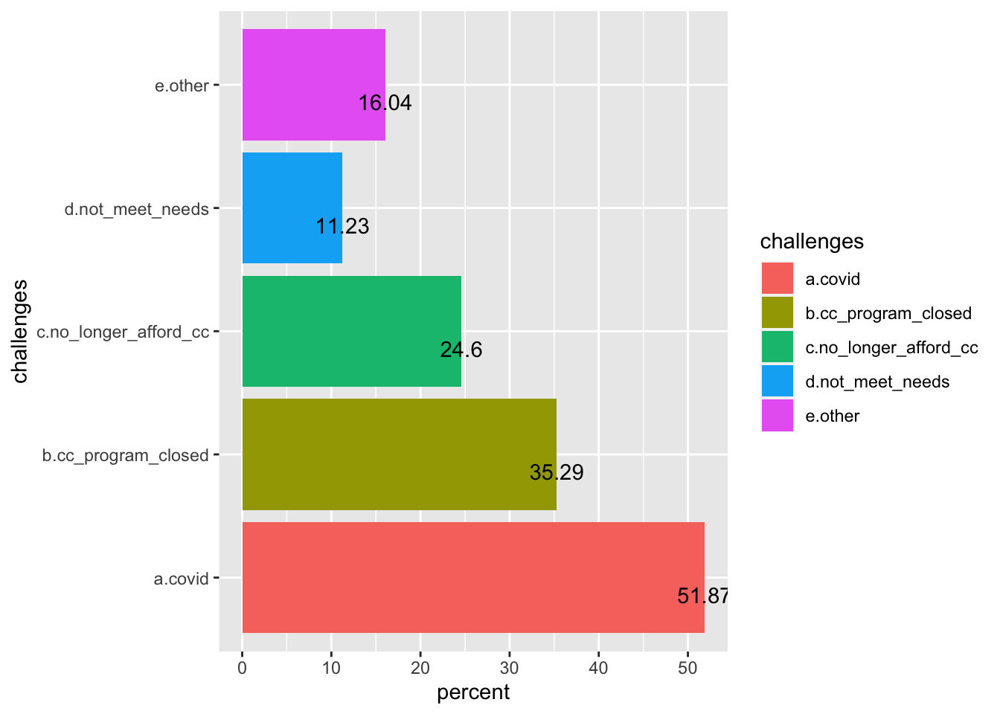
There were 50.7% of caregivers thinking the government should do a lot more to support childcare; 23.44% reporting the government should do somewhat more, and only 8.20% of caregivers thinking the government has done enough to support childcare.
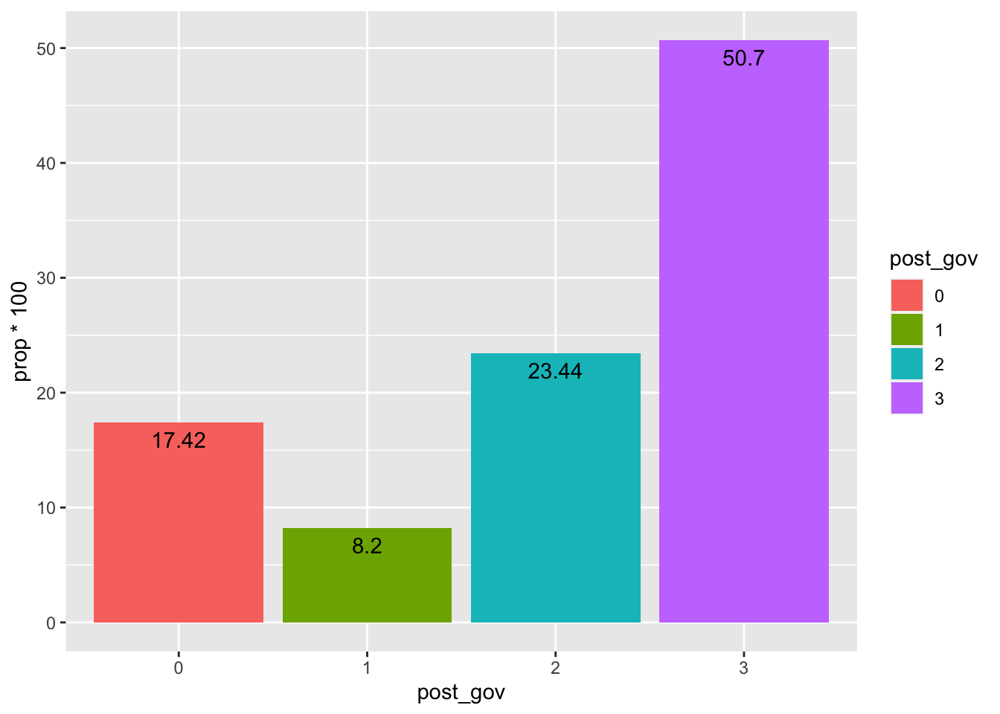
Note. 0 = not sure, 1 = doing enough, 2 = should do somewhat more, 3 = should do a lot more.
The average satisfaction about government’s actions to support childcare in Black, Latinx, and White caregivers were 2.21, 2.02, and 2.08, respectively (with higher score indicating reduced satisfaction). ANOVA suggested that the differences across the three groups were not statistically significant.
## # A tibble: 4 x 2
## race_ethnic post_gov_mn
## <chr> <dbl>
## 1 Black 2.21
## 2 Latinx 2.02
## 3 White 2.08
## 4 <NA> 1## Analysis of Variance Table
##
## Response: post_gov
## Df Sum Sq Mean Sq F value Pr(>F)
## race_ethnic 2 2.55 1.2761 0.9937 0.3705
## Residuals 1273 1634.77 1.2842##
## Pairwise comparisons using t tests with pooled SD
##
## data: ccare_10$post_gov and ccare_10$race_ethnic
##
## Black Latinx
## Latinx 0.48 -
## White 0.52 0.52
##
## P value adjustment method: holmThe average satisfaction about government’s actions to support childcare in high- and low-income caregivers were 2.02 and 1.87, respectively (with higher score indicating reduced satisfaction). t test suggested that the differences across the two groups were not statistically significant.
##
## Welch Two Sample t-test
##
## data: ccare_10$post_gov by ccare_10$poverty_cat
## t = 0.85861, df = 124.3, p-value = 0.3922
## alternative hypothesis: true difference in means is not equal to 0
## 95 percent confidence interval:
## -0.2034878 0.5153100
## sample estimates:
## mean in group High Income mean in group Low Income
## 2.021583 1.865672The average satisfaction about government’s actions to support childcare in single- and non-single caregivers were 2.28 and 2.06, respectively (with higher score indicating reduced satisfaction). t test suggested that the differences across the two groups were statistically significant (p < .05). Single parents were less satisfied with the government’s childcare actions.
##
## Welch Two Sample t-test
##
## data: ccare_10$post_gov by ccare_10$single_cat
## t = -2.3749, df = 173.93, p-value = 0.01864
## alternative hypothesis: true difference in means is not equal to 0
## 95 percent confidence interval:
## -0.40837990 -0.03767832
## sample estimates:
## mean in group Dual parent mean in group Single parent
## 2.055166 2.278195The average satisfaction about government’s actions to support childcare in caregivers of children with and without disability were 1.73 and 2.08, respectively (with higher score indicating reduced satisfaction). t test suggested that the differences across the two groups were not statistically significant.
##
## Welch Two Sample t-test
##
## data: ccare_10$post_gov by ccare_10$disability_cat
## t = 1.3608, df = 25.773, p-value = 0.1853
## alternative hypothesis: true difference in means is not equal to 0
## 95 percent confidence interval:
## -0.1805116 0.8868388
## sample estimates:
## mean in group No disability mean in group Child with disability
## 2.083933 1.730769Some caregivers perceived the “bright spots” in government’s actions to support childcare as below:
1) Close childcare center to keep kids safe(38.44%)
2) Reopening childcare to allow essential workers and others go to work (35.00%)
3) Publish health standards to keep kids safe (34.69%)
Only few caregivers perceived government’s actions in providing funds to keep childcare open, paying staff more, reducing or eliminating tuition and fees to make childcare more affordable as bright spots.
Additionally, 36.25% of caregivers responded “don’t know/can’t think of any bright spots”.
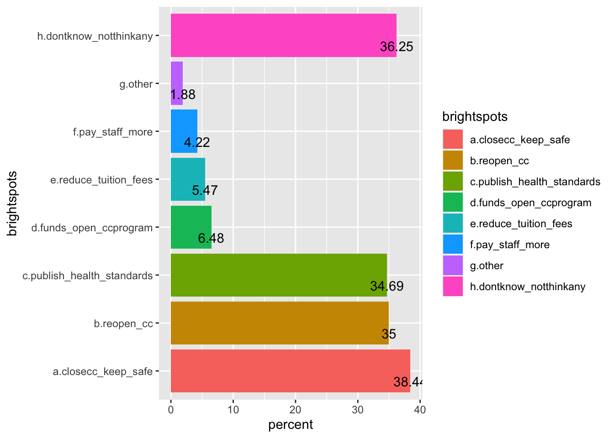
Caregivers reported that actions by government below were still needed to support childcare and address current concerns:
1) Support the well-being of early childhood educators by ensuring that they have sufficient compensation and benefits (68.28%)
2) Ensure more parents have access to child care by making more parents eligible for child care subsidies/assistance (59.14%)
3) Stabilize and maintain the supply of child care programs by providing financial assistance to providers (51.80%)
4) Increasing the amount of child care subsidies do parents don’t have to pay as much (50.23%)
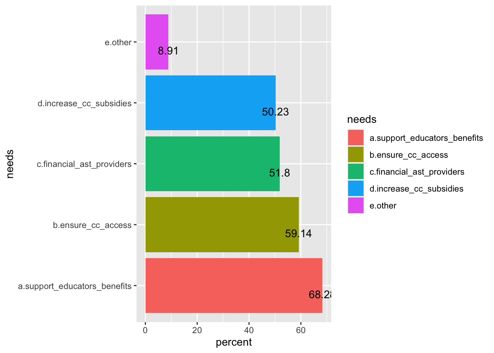
Caregivers reported that below actions will make them feel that they have a better childcare plan for next month:
1) Flexible work arrangement (43.59%)
2) Financial resources for child care or other expenses (38.44%)
3) Help from relatives and neighbors (30.00%)
4) More guidance on children’s health & safety in child care or camp (28.44%)
5) Paid timeoff from employer (22.34%)
5) More information or services from your local school system or government (22.34%)
6) Camp or child care options from your local school system or government (19.45%)
7) Help locating available child care (18.98%)
8) Parent support groups or parenting resources (17.89%)
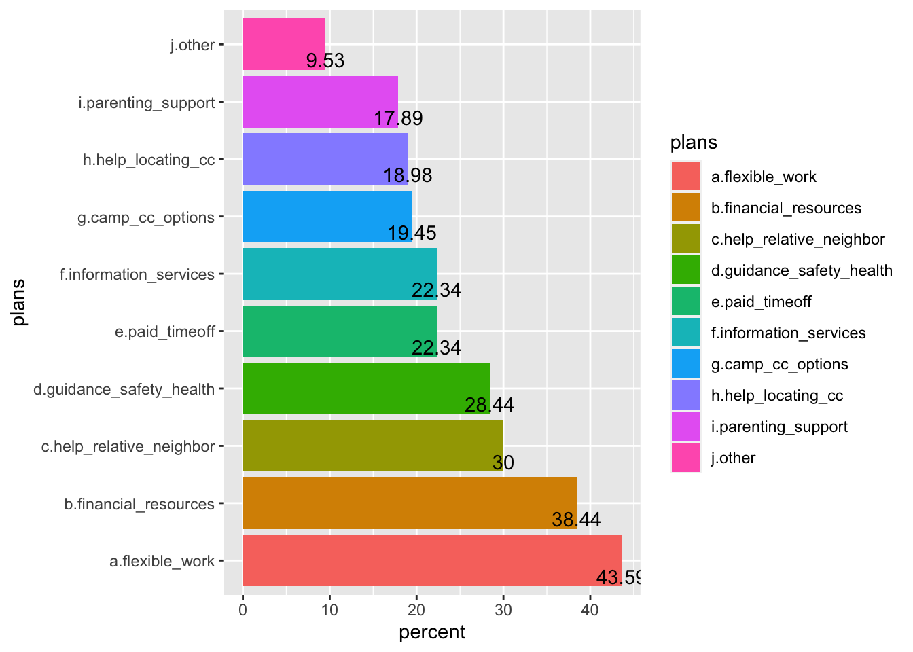
Majority of caregivers reported that childcare expenses accounting for 10%-20% of household income (36.8%) or 5-9% of household income (36.25%) as affordable childcare.
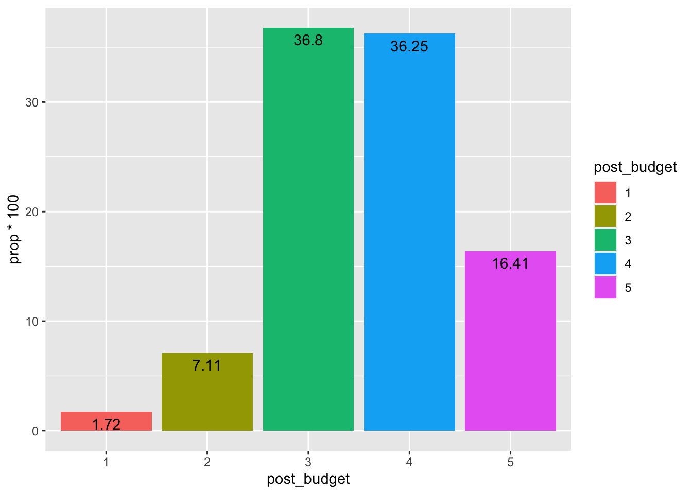
Note. 1 = >30% of household income, 2 = 20%-30% of household income, 3 = 10%-20% of household income, 4 = 5-9% of household income, 5 = 1-4% of household income.